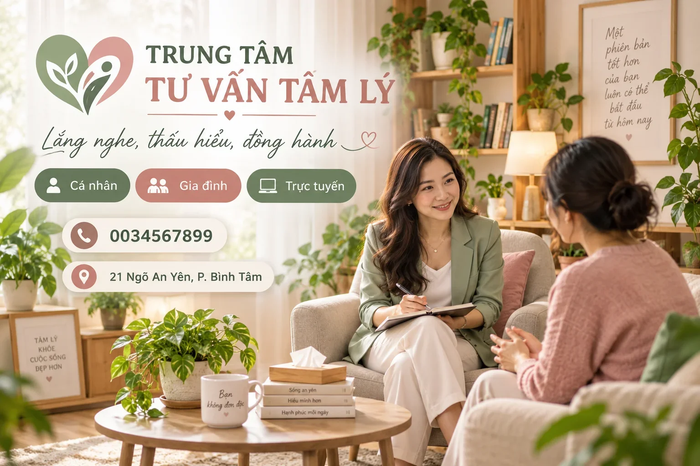
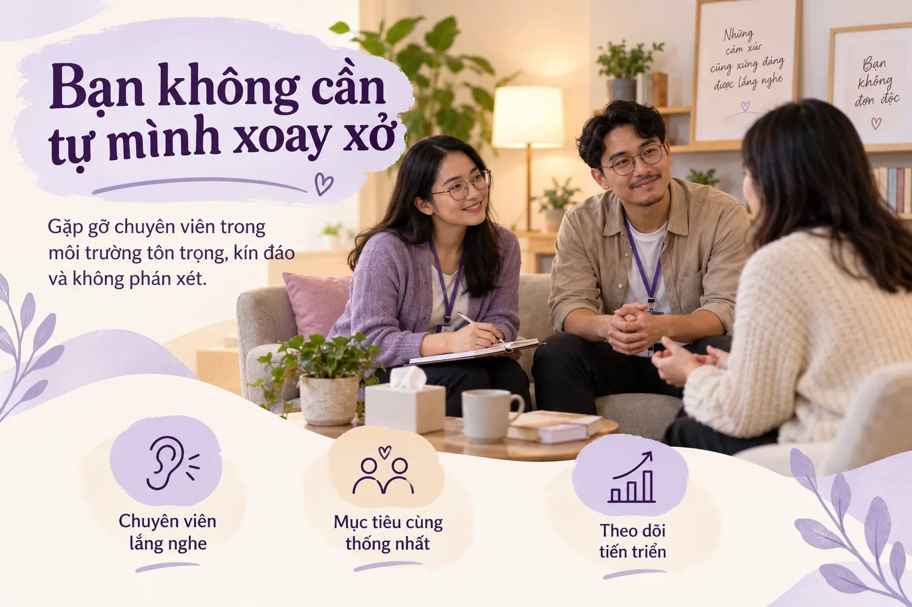
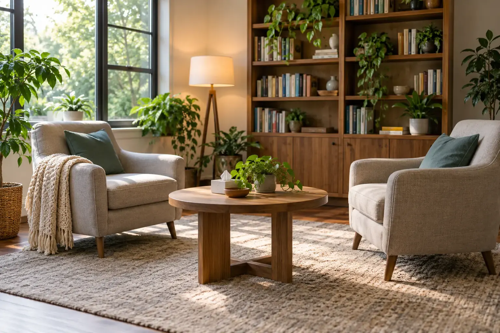

An Yên là trung tâm tư vấn tâm lý với 12 chuyên viên lâm sàng. Mỗi câu chuyện được lắng nghe trong không gian riêng tư, không phán xét — tại trung tâm ở 21 Ngõ An Yên, hoặc online qua video nếu bạn ở xa.
Hotline nhận cuộc gọi 08:00 – 20:00 tất cả các ngày · buổi làm quen 15 phút miễn phí
In trên tấm poster chào đón của trung tâm — cũng là ba điều khách đến tư vấn kể lại nhiều nhất.
Mỗi người đi qua những trạm khác nhau, với nhịp khác nhau. Cứ bắt đầu từ trạm bạn thấy đúng nhất — chuyên viên sẽ cùng bạn đi tiếp.
♥ Đường mòn chỉ là gợi ý — bạn hoàn toàn có thể chọn trạm khác, hoặc để chuyên viên dẫn đường sau buổi làm quen.
Cá nhân, cặp đôi & gia đình, học đường, và doanh nghiệp — mỗi nhóm có lộ trình riêng.
Trả lời nhanh 5 câu về tuần vừa qua của bạn. Trung tâm đọc nhịp để gợi ý trạm phù hợp và hình thức tư vấn — không chấm điểm, không phán xét, kết quả chỉ hiện trên máy của bạn.
Buổi tư vấn đầu tiên thường khó nhất: "nói sao cho đúng". Bài nhịp lòng giúp chuyên viên nắm được trạng thái của bạn ngay từ phút đầu — bạn đỡ phải kể lại từ đầu, buổi đầu sẽ nhẹ hơn.
🔒 Riêng tư: bài này chạy ngay trên máy bạn — trung tâm không lưu, không nhận kết quả trừ khi bạn chủ động gửi kèm phiếu đặt buổi.


An Yên bắt đầu từ năm 2016 với hai phòng tư vấn nhỏ và một niềm tin: khi được lắng nghe đúng cách, con người tự tìm ra đường đi của mình. Hôm nay trung tâm có 12 chuyên viên tâm lý học lâm sàng, 4 phòng tư vấn riêng và 1 phòng nhóm — nhưng quy trình buổi đầu vẫn vậy: nghe trước, chốt lộ trình sau.
Chủ nhật hằng tuần có workshop kỹ năng chăm sóc tinh thần mở cho cộng đồng; mùa thi, chuyên viên của An Yên đến trường cùng học sinh tập cân bằng áp lực.
— ThS. Lê Thảo Nguyên, Giám đốc chuyên môn —
"Buổi đầu mình định nói ít thôi, ai ngờ chuyên viên cứ để mình kể theo nhịp của mình. Ra về nhẹ cả người — lần đầu được nghe hết một câu chuyện của mình."
Chị H., 29 tuổitư vấn cá nhân · mật danh"Vợ chồng mình tưởng phải bỏ cuộc. Buổi thứ ba, lần đầu hai đứa ngồi nghe nhau nói hết câu mà không cãi. Bài tập về nhà của cô dễ làm, hợp thực tế."
Anh M. & chị T.tư vấn cặp đôi · mật danh"Con trai 15 tuổi vốn im lặng, giờ chủ động xin đi tư vấn đều. Trung tâm giữ kín thông tin với cả mình trừ khi con đồng ý — chính điều đó làm con tin."
Cô B., phụ huynhtuổi vị thành niên · mật danh"Mình ở tỉnh, tư vấn online mỗi tuần 1 buổi. Link riêng, đúng giờ, không ai biết. 5 tháng nay mình ngủ lại được 6 tiếng liền. Chấm thiếu nửa sao vì giờ tối hay kín slot."
Anh K., 34 tuổitư vấn trực tuyến · mật danh♥ Tên khách hàng được thay bằng mật danh để bảo mật — nội dung trích từ sổ cảm ơn của trung tâm.